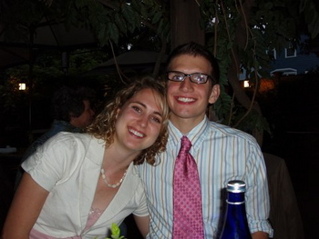
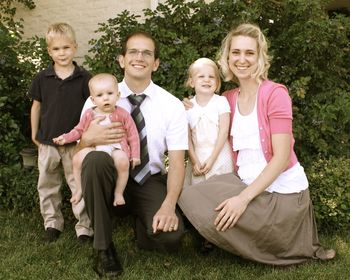

Jay McCarthy
1 About Me
I am an associate professor at the University of Massachusetts at Lowell in the Computer Science Department. Previously, I have been at Brigham Young University and Vassar College.
I am a member of the PLT research group. I work on the Racket programming language.
I completed a Ph.D. at Brown University in the Computer Science Department. I worked with Shriram Krishnamurthi. I was an NSF Graduate Research Fellow.
I graduated from the University of Massachusetts at Lowell where I studied Computer Science, Mathematics, and Economics.
My work has been supported by the National Science Foundation’s Software and Hardware Foundations (CISE/CCF) program, Secure and Trustworthy Cyberspace (SaTC) program, and Computing Education for the 21st Century (CISE/CNS) program.
2 Research Interests
I am interested in applying programming languages research techniques to cryptographic protocols and the Web, as well as other areas of security and systems. I am also very interested in theorem provers and program verification.
3 Publications
Radha Nakade, Eric Mercer, Peter Aldous, Kyle Storey, Benjamin Ogles, Joshua Hooker, Sheridan Jacob Powell, and Jay McCarthy. “Model Checking Task Parallel Programs for Data-race”. Innovations in Systems and Software Engineering (SI: NFM2018). (PDF)
Kimball Germane, Jay McCarthy, Michael Adams, and Matthew Might. “Demand Control-Flow Analysis”. VMCAI 2019.
Matthias Felleisen, Robert Bruce Findler, Matthew Flatt, Shriram Krishnamurthi, Eli Barzilay, Jay McCarthy, and Sam Tobin-Hochstadt. “A Programmable Programming Language”. Communications of the ACM. (Publisher) (Slides)
Radha Nakade, Eric Mercer, Peter Aldous and Jay McCarthy. “Model Checking Task Parallel Programs for Data-race”. NASA Formal Methods Symposium 2018.
Max S. New, Burke Fetscher, Jay McCarthy, and Robert Bruce Findler. “Fair Enumeration Combinators”. Journal of Functional Programming 27, e19, 2017. (Publisher) (PDF) (Code)
Jay McCarthy, Burke Fetscher, Max New, Daniel Felty, and Robert Bruce Findler. “A Coq Library For Internal Verification of Running-Times”. Science of Computer Programming 2017. (Publisher) (PDF) (Code)
Jay McCarthy. “Bithoven: Gödel Encoding of Chamber Music and Functional 8-Bit Audio Synthesis”. FARM 2016. (PDF) (Code)
Jay McCarthy, Burke Fetscher, Max New and Robert Bruce Findler. “A Coq Library For Internal Verification of Running-Times”. FLOPS 2016. (PDF) (Code)
Helen H. Hu, Cecily Heiner, and Jay McCarthy. “Deploying Exploring Computer Science Statewide”. SIGCSE 2016. (PDF)
Matthias Felleisen, Robert Bruce Findler, Matthew Flatt, Shriram Krishnamurthi, Jay McCarthy, and Sam Tobin-Hochstadt. “The Racket Manifesto”. SNAPL 2015. (PDF)
Neil Toronto, Jay McCarthy, and David Van Horn. “Running Probabilistic Programs Backwards”. ESOP 2015. (PDF)
Neil Toronto and Jay McCarthy. “Practically Accurate Floating-Point Math”. Computing in Science and Engineering, July 2014. (Publisher) (PDF)
Yu Huang, Eric Mercer, and Jay McCarthy. “Proving MCAPI Executions are Correct using SMT”. ASE 2013. (PDF)
Gregory H. Cooper, Arjun Guha, Shriram Krishnamurthi, Jay McCarthy, and Robert Bruce Findler. “Teaching Garbage Collection without Learning Compilers or Interpreters”. SIGCSE 2013. (PDF)
Neil Toronto and Jay McCarthy. “Computing in Cantor’s Paradise with LambdaZFC”. FLOPS 2012. (PDF) (Code) (Slides)
Everett Morse, Nick Vrvilo, Eric Mercer, and Jay McCarthy. “Modeling Asynchronous Message Passing for C Programs”. VMCAI 2012. (PDF) (Code)
Casey Klein, John Clements, Christos Dimoulas, Carl Eastlund, Matthias Felleisen, Matthew Flatt, Jay McCarthy, Jon Rafkind, Sam Tobin-Hochstadt, Robert Bruce Findler. “Run Your Research: On the Effectiveness of Lightweight Mechanization”. Symposium on Principles of Programming Languages, 2012. (PDF) (Code)
Casey Klein, Jay McCarthy, Steven Jaconette and Robert Bruce Findler. “A Semantics for Context-Sensitive Reduction Semantics”. Asian Symposium on Programming Languages and Systems, 2011. (PDF) (Code)
Tim Disney, Cormac Flanagan, and Jay McCarthy. “Temporal Higher-Order Contracts”. International Conference on Functional Programming, 2011. (PDF) (Code) (Slides)
Neil Toronto and Jay McCarthy. “From Bayesian Notation to Pure Racket via Discrete Measure-Theoretic Probability in LambdaZFC”. Symposium on Implementation and Application of Functional Languages, 2011. (PDF) (Slides)
Jay McCarthy. “The Two-State Solution: Native and Serializable Continuations Accord”. International Conference on Object Oriented Programming, Systems, Languages and Applications, 2010. (PDF) (Code)
Jay McCarthy and Shriram Krishnamurthi. “Trusted Multiplexing of Cryptographic Protocols”. International Workshop on Formal Aspects in Security and Trust, 2009. (PDF) (Code)
Jay McCarthy. “Automatically RESTful Web Applications Or, Marking Modular Serializable Continuations”. International Conference on Functional Programming, 2009. (PDF) (Code)
Jay McCarthy. “Static Analyses of Cryptographic Protocols”. PhD Dissertation, Brown University, 2009. (PDF) (Code)
Jay McCarthy and Shriram Krishnamurthi. “Cryptographic Protocol Explication and End-Point Projection”. European Symposium on Research in Computer Security, 2008. (PDF) (Code)
Jay McCarthy and Shriram Krishnamurthi. “Minimal Backups of Cryptographic Protocol Runs”. Formal Methods in Security Engineering, 2008. (PDF) (Code)
Jay McCarthy, Joshua Guttman, John Ramsdell, and Shriram Krishnamurthi. “Compiling Cryptographic Protocols for Deployment on the Web”. International World Wide Web Conference, 2007. (PDF) (Code)
Shriram Krishnamurthi, Peter Walton Hopkins, Jay McCarthy, Paul T. Graunke, Greg Pettyjohn, and Matthias Felleisen. “Implementation and Use of the PLT Scheme Web Server”. Higher-Order and Symbolic Computation, 2007. (PDF) (Code)
Jay McCarthy and Shriram Krishnamurthi. “Interaction-Safe State for the Web”. In Scheme and Functional Programming, September 2006. (PDF) (Code)
4 Students
4.1 Current
Conor Finegan (PhD, Fall 2018–present)
4.2 Past
Chike Abuah (PhD, Fall 2018)
Lindsey Reams (PhD, Fall 2016–Fall 2018)
Srividya Kuppa (MS, Fall 2016–Spring 2017)
Gerald Pipes (Ugrad, Fall 2016–Spring 2017) (now: Software Engineer at Carbonite)
Blake Johnson (MS, Winter 2010–Fall 2014) (now: Software Engineer at Flexport)
Project: Racket Demodularizer
Nick Shelley (Ugrad, Fall 2010) (MS, Winter 2011–Summer 2014) (now: Senior iOS Developer at Ancestry)
MS Thesis: Autocompletion Without Static Typing
Neil Toronto (PhD, Summer 2008–Summer 2014) (now: Microsoft Research Cambridge)
PhD Thesis: Trustworthy, Useful Languages for Probablistic Modeling and Inference (Defense)
Christine Unsicker (nee Kendall) (Ugrad, Fall 2013-Winter 2014) (now: Online Adjunct Instructor at BYU-Idaho)
Project: How Students Learn to Debug and Dynamic Interactive Programming.
Andrew Kent (PhD, Spring 2013–Winter 2014) (now: CS PhD student at Indiana University)
Trevor Oakes (Ugrad, Spring 2012–Fall 2013)
Alicia Wood (nee Crowder) (Ugrad, Spring 2013–Summer 2013) (now: Software Engineer at Adobe)
Project: Exploring Computer Science, Unit 5 revisions for Utah Exploring Computer Science Initiative
Logan Kearsley (Ugrad, Winter 2013) (now: Computational Linguistics grad student at BYU)
Project: Implementing a Vau-based Language With Multiple Evaluation Strategies
Sean Reque (MS, Winter 2010–Winter 2013) (now: Software Reliability Engineer at Fitbit)
MS Thesis: An Optimized R5RS Macro Expander (code)
Dan Burton (Ugrad, Winter 2012–Fall 2013) (now: Clojure Developer at Funding Circle US)
Project: Type Class-style Generics for Racket
Chase White (Ugrad, Spring 2012–Fall 2013) (now: Software Engineer at Restaurant365)
Project: Verified Linear Logic Theorem Prover
Kimball Germane (MS, Winter 2012–Fall 2012) (now: CS PhD student at University of Utah)
Peter Aldous (Ugrad, Winter 2010–Summer 2010) (now: Postdoc at BYU)
Undergrad Honors Thesis: Parallelization of tasks without a priori knowledge of their dependencies
Renae McDougal (nee Ferguson) (Ugrad, Winter 2010) (now: User Experience Designer at Qualtrics)
Daniel Davis (Ugrad, Winter 2009–Winter 2010) (now: Software Engineer at L-3 Communications)
Jensen Warnock (Ugrad, Winter 2009–Winter 2010) (now: Managing Director at Diversification Partners)
5 Teaching
2019 Fall: |
|
| ||
2019 Fall: |
|
| ||
2019 Summer: |
|
| ||
2019 Summer: |
|
| ||
2019 Spring: |
|
| ||
2018 Fall: |
|
| ||
2018 Fall: |
|
| ||
2018 Summer: |
|
| ||
2018 Summer: |
|
| ||
2018 Spring: |
|
| ||
2018 Spring: |
|
| ||
2017 Fall: |
|
| ||
2017 Fall: |
|
| ||
2017 Summer: |
|
| ||
2017 Summer: |
|
| ||
2017 Spring: |
|
| ||
2017 Spring: |
|
| ||
2016 Fall: |
|
| ||
2016 Fall: |
|
| ||
2016 Summer: |
|
| ||
2016 Summer: |
|
| ||
2016 Spring: |
|
| ||
2016 Spring: |
|
| ||
2015 Fall: |
|
|
Other feedback is available at RateMyProfessors.com.
5.1 Archived Courses from Vassar
2015 Spring: |
|
| ||
2015 Spring: |
|
| ||
2014 Fall: |
|
| ||
2014 Fall: |
|
|
5.2 Archived Courses from BYU
2013 Fall: |
|
| ||
2013 Spring: |
|
| ||
2013 Winter: |
|
| ||
2012 Fall: |
|
| ||
2012 Winter: |
|
| ||
2011 Fall: |
|
| ||
2011 Fall: |
|
| ||
2011 Spring: |
|
| ||
2011 Winter: |
|
| ||
2010 Fall: |
|
| ||
2010 Winter: |
|
| ||
2009 Fall: |
|
| ||
2009 Fall: |
|
| ||
2009 Winter: |
|
| ||
2008 Fall: |
|
|
Other feedback is available at RateMyProfessors.com.
6 Service
WWW-WPDAI 2018
Scheme Workshop 2017
European Lisp Symposium 2017
NEPLS 2016
Trends in Functional Programming 2016
Trends in Functional Programming in Education 2016 (chair)
Mathematics of Program Construction (MPC) 2015
ICFP 2014
OOPSLA 2014
Trends in Functional Programming 2014 (co-editor of proceedings + PC member)
COORDINATION 2012
COORDINATION 2011
Trends in Functional Programming (2012–)
POPL 2015
OOPSLA 2011
Utah CSTA, Treasurer (2011–2014)
Utah NCWIT Aspirations Award committee (2012, 2013)
7 Projects
7.1 Current
I am responsible for many aspects of the Racket programming language. I really like DrDr and the package system.
In particular, I am responsible for continued development of the Racket Web Server. It is available with the standard Racket distribution. If you’d like to learn how to use it refer to the tutorial or application reference manual.
I have a Github account with lots of code on it; in particular, most of my packages live there. I write about lots of this code on my blog.
7.2 Past
I worked on The Whole-Protocol Programming Language, a global language for designing protocols in the strand space model.
I worked on The Cryptographic Protocol Programming Language, a role-based language for designing protocols in the strand space model.
I used to maintain the Continue Conference Manager, a web application for paper submissions, reviews, and PC meetings. It has been superseded by Continue 2.0, which is written in Flapjax.
I wrote the first version of Resume, the Continue of faculty application applications. It has also been rewritten in Flapjax.
8 Personal
I am married to Elizabeth Day McCarthy.

We are both members of The Church of Jesus Christ of Latter-day Saints.
We have four kids, but this is an old picture:

9 Links
I used direct Mormon history tours for the Mormon Heritage Associaton.
I used to attend the Intercontinental Foreign Language Program at Harvard Square.
10 Contact
My email address is my first name and last name separated by a dot at gmail.com or my first name at racket-lang.org, but I only check my email once a day, so be mindful of that.
I have a phone in my office (978) 934-3629, but I don’t like using it, so get my cell number. If you need quick turn-around in a communique, I try to be on Google Chat a lot.
My office is Dandeneau 341, but if you are mailing me something send it to:
Jay A. McCarthy |
University of Massachusetts Lowell |
Department of Computer Science |
One University Avenue |
Lowell, MA 01854 |
11 PGP Public Key
-----BEGIN PGP PUBLIC KEY BLOCK----- |
Version: GnuPG v1.4.11 (GNU/Linux) |
|
mQENBE7/JqEBCACo0YXRAwX4pzFqsaspcCejqPNh6MwUpuIIxnm9d3c4ztbh3sIu |
vIZBoxCPerXmuMvRIe8VB5/dAJGIrnMBvbfd89UuE3YiYmGO62jL2xezFXE4KmRl |
AJWfZJep+2T3WDxMQg6jXozHhY4Wmuy4bNribSNcjgchRaxJ9cJLvFgcse+UlzB0 |
TYqQeq7/OEbvPYb+OSoUsUfBLqfqiS+ucIbJaHo857LkT5752+sVdS38jDvqB/Cd |
DKue1VSMb/E3LlyjPbei8GvDPiso6LWmLEgFwaLbMglCslEAKD7DVS73yxy6oG6X |
EHplGtx3W4Hd6vilkLEUoFqd/KIYVr/SvQfVABEBAAG0JUpheSBNY0NhcnRoeSA8 |
amF5Lm1jY2FydGh5QGdtYWlsLmNvbT6JATgEEwECACIFAk7/JqECGwMGCwkIBwMC |
BhUIAgkKCwQWAgMBAh4BAheAAAoJEBjA2Sen9kH+A2EH+wXDu1TNVvMqxWPaL+5c |
NeJAPKjxKeES1UTboETwbfv8mIMH+YRHh3KoAJi121zMbZRuU7+WhYiavEWVvj0p |
PZEUhIF4pd94nchi6IxFcL4Gk40B1ePjx/s7/gtKwqU9JfJamLrF438+Cys7p0aO |
6NgwUAnM5kSCzhGVKlXN0T/51uwekoi+wZzgpkZdqyeb631b8HOpkDNndnrMl5xJ |
JpZar4rHxi/Wxj6d3BDarba3AJ2WVay1oZmFw1bGyTqk/Qp3fmwRN9h/fcow4OjQ |
kDFDTVWmVOHbWOmYVTbWxYhDca8KpNYHhaJDXZKRawrF8neuHpHfZqnslfGTb7SH |
bOu5AQ0ETv8moQEIAMqNOFvGvs35kLuAeExF4ndbogjeVcOUREpoPOZ9eH53EcPm |
w2D4UwUyJIRjJPZb3os8vKm9ZcC9tIYXyigVT2RsseJeX7J/W+wl/ukeOUbHQOCm |
Fc9e8F+fYFvyrsRiQs8ZS9dvEe+cp1kYPA05Wm0JCzifWxREyhYVb0DzbKbcE67i |
YkkR1aWH5OBYEBx8+ycxu15RVScy4U9v5NqTx58BnRDPYNTtATIgpw1rJcdnNNB5 |
/UQ2PPcSqwbZ87uJeKBlDJ9W45u5JQCDgrlxV6rwwYLTLPdk44fSb2Dg3HvNVkna |
nKqUvgjEohDpdsOlgKRsDl0tCMLUxr/2samslXUAEQEAAYkBHwQYAQIACQUCTv8m |
oQIbDAAKCRAYwNknp/ZB/nJTB/9msB0B51sqyK8YvChEBE33rZ1BOvvgCLuQL/hq |
3WA7EBg7vYEY9Xo7U68wymusmlvtzxv3XrDHiZROJOQiObCLSmKdLa480F73pwnb |
sGN1ZQH4jRoyLH+SAuCthQBIU59gX9acwm2APUH7ScDYDuJkfE1CsPvS+lxRcFdl |
G51Ewg2nFJNMiFuVg5Uq19pnf3eWB+6iICXo9u2GFw1Xd0X7lQS0oUc+bf1pzGGH |
XEvcz/z62rr4lAOvOPVLanw97zE8EaX8JS9ZB2JPmimYybELcW5fglXxXKOdjbwS |
Rct8IYBxhhlPRLEeXwX2lIRBMTILvpp7kM3bdGE198Hmi/W4 |
=XZmA |
-----END PGP PUBLIC KEY BLOCK----- |